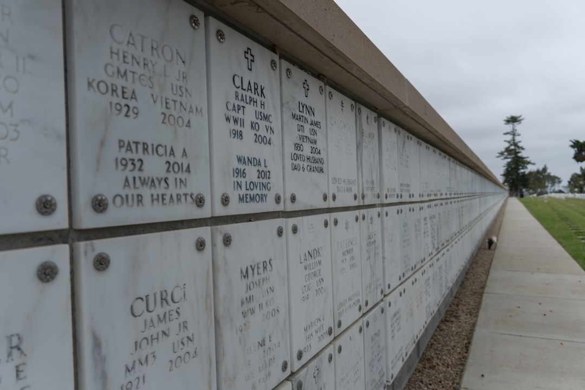

A useful retaining wall enquiry starts with measurable scope: wall length, average retained height, chosen or possible wall system, access, slope, drainage, removal and any engineering or approval allowance. The source guide compares 7 wall systems, uses 8 jurisdiction pathways, and presents 3 planning bands: low, typical and high. Its calculator can include professional and approval allowances of A$1,200 to A$3,500, or A$3,000 to A$8,000 for complex projects.
For homeowners comparing retaining wall quotes, the practical work is defining the wall, site access, drainage and approval questions clearly enough that contractors price the same job.
Retaining Wall Quotes Explained
For the source guide, see Retaining Wall Quotes.
Retaining Wall Quotes frames a retaining wall enquiry around the inputs that change the job: wall-face area, material choice, machine access, slope, drainage, removal, and professional or approval allowances. That is more useful than asking for a metre rate in isolation, because the same length of wall can price differently when height, access, soil conditions or replacement work change.
Before requesting prices, write down the wall length in metres and the average retained height, not the total fence height above it. Add whether the project is a new wall, a replacement, a repair or an assessment. If the material is undecided, say so rather than forcing a contractor to price the wrong system. Photos are also useful for follow-up because access, slope and existing failure signs are hard to explain in a short form.
- Measure length and retained height separately.
- State whether an existing wall must be removed.
- Describe access as good machine access, limited side access, or difficult access.
- Flag drainage questions instead of assuming they are included.
- Ask whether engineering or approval costs sit inside or outside the quote.
Material choice is a site decision, not only a finish decision
The source guide compares concrete sleeper, cast-in-situ concrete, timber, block and brick, stone and sandstone, gabion, and rock or boulder systems. The useful question is where each wall system fits the site, not which one looks cheapest in a photo. A quote should identify the proposed system, the visible finish where relevant, and any base, reinforcement, drainage or access assumption that affects the installed result.
Concrete sleeper and poured concrete discussions often depend on post-and-panel or formwork details. Masonry, stone and sandstone can involve base preparation and skilled labour considerations. Gabion, rock and boulder options need enough space and access for the specified basket, fill or placement method. Timber may be discussed where treatment, durability and replacement planning are relevant. If the quote only names a material, ask what has been allowed for behind the visible face.
Approvals, engineering and boundaries should be separate questions
The published guide separates local requirements from the price conversation by using state and territory pathways, then asking owners to confirm property-specific approval, engineering, drainage and boundary questions. That distinction matters because an online planning range is not a structural assessment and cannot decide what a specific council, certifier or engineer will require for a site.
Ask each contractor how they handle design assumptions, engineering input and approvals. For boundary walls, ask what information they need about neighbours before work is scoped. For drainage issues, ask whether the quoted work includes a drainage allowance or whether it only covers the visible wall structure. These are quote comparison questions, not claims about what every property must do.
For Queensland readers comparing city level information, the related Brisbane retaining wall quote guide narrows the same planning logic to a local page without changing the need to confirm site-specific requirements.
How to compare contractor responses
A clean comparison puts the same brief in front of each provider, then checks what each response includes or excludes. Low, typical and high planning bands are useful for early budgeting, but a contractor quote should still explain scope. If one response looks cheaper, check whether removal, drainage, access limitations, engineering, approval support or finishing has been left out.
Use the calculator range as a conversation starter, not as a promised price. The source page states that soil, loads, drainage, access, design, approvals and scope can materially change the result. That means the best response is usually the one that makes assumptions visible, even if it is not the shortest or simplest number.
- Send the same measurements and photos to each provider.
- Ask for inclusions and exclusions in writing.
- Confirm whether GST and drainage allowances are included.
- Ask how site access and slope have affected the estimate.
- Keep planning ranges separate from final quoted work.
Who this applies to
This guide applies to property owners planning a new retaining wall, replacing an existing wall, seeking repair advice, or checking whether further assessment is needed. It is also useful for owners who are unsure about material choice and need contractors to price comparable options instead of unrelated designs.
It is less useful for anyone seeking a certified engineering answer without a site assessment. The source guide is explicit that its planning information is not a quote or structural assessment. Treat it as preparation for conversations with local retaining wall professionals, especially when drainage, boundary position, retained height or approval questions are uncertain.
- Measure the wall. Record length in metres and average retained height so the brief starts with wall-face area rather than guesswork.
- Describe the job type. Say whether the project is a new wall, replacement, repair or assessment because each changes the conversation.
- Choose or shortlist materials. Nominate a preferred wall system or state that the material is undecided so providers can respond appropriately.
- Document access and slope. Describe machine access, side access and working slope because these are named cost adjustments in the source guide.
- Ask about approvals. Request a clear explanation of engineering, approval, drainage and boundary assumptions before comparing prices.
| Decision point | Lower clarity response | Better clarity response |
|---|---|---|
| Wall scope | Only gives a total price | Shows length, retained height and wall-face area assumptions |
| Material | Names a finish only | Identifies the wall system and key inclusions |
| Access | Does not mention access | Explains machine access, limited side access or difficult access |
| Drainage | Assumes drainage is understood | States whether drainage allowance is included |
| Approvals | Treats approvals as a side issue | Separates engineering, approval and boundary questions |
Common questions
Is an online planning range the same as a contractor quote? No. The source guide states that its planning information is not a quote or structural assessment, and that site conditions, drainage, design, approvals and scope can materially change the result.
Which wall systems can be compared before enquiring? The guide compares concrete sleeper, cast-in-situ concrete, timber, block and brick, stone and sandstone, gabion, and rock or boulder systems.
What details should I send with an enquiry? Send wall length, average retained height, project type, likely material, access, slope, drainage questions and whether an existing wall needs removal. Photos can help during follow-up.
Should approval and engineering costs be included in every quote? Do not assume that. Ask whether professional and approval allowances are included, excluded or still to be confirmed for the property.
This guide covers quote preparation, material comparison, access, drainage, approvals and contractor questions for retaining wall planning in Australia.